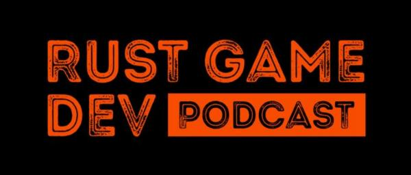
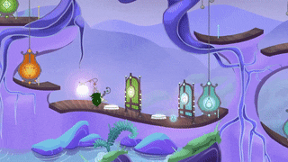
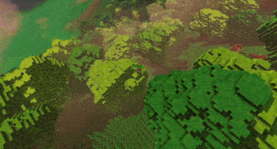
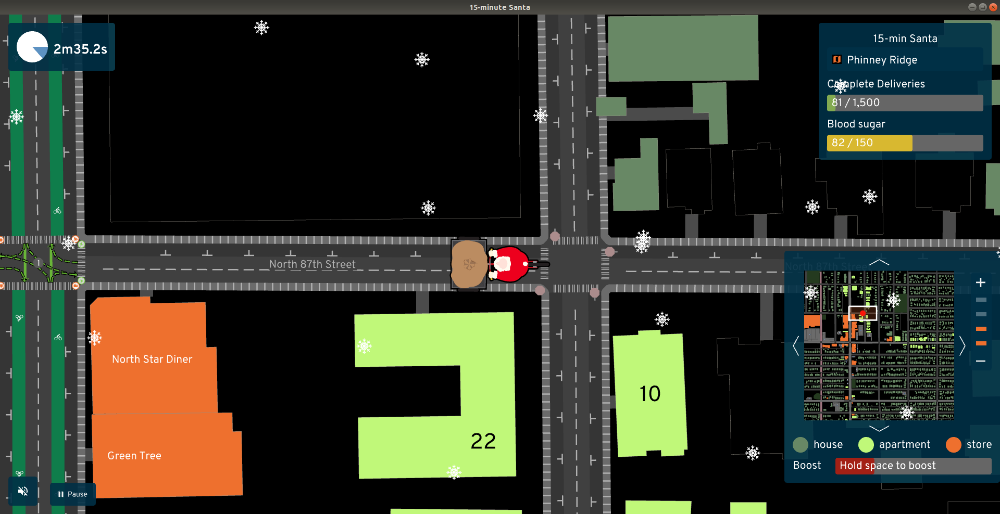
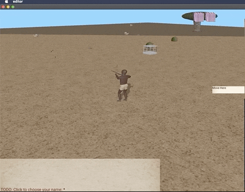
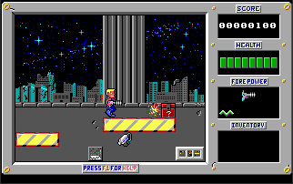
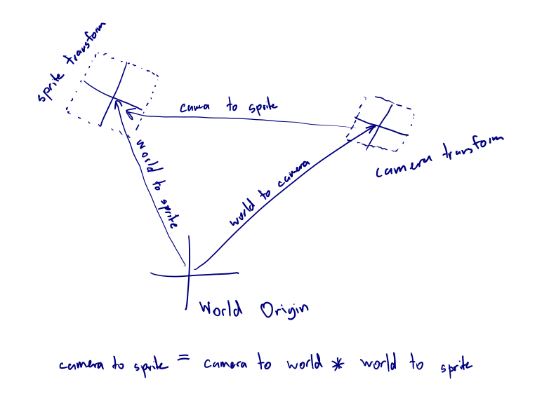
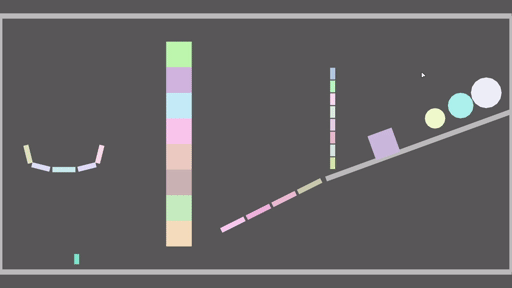

This Month in Rust GameDev #17 - December 2020
Welcome to the 17th issue of the Rust GameDev Workgroup's monthly newsletter. Rust is a systems language pursuing the trifecta: safety, concurrency, and speed. These goals are well-aligned with game development. We hope to build an inviting ecosystem for anyone wishing to use Rust in their development process! Want to get involved? Join the Rust GameDev working group!
You can follow the newsletter creation process by watching the coordination issues. Want something mentioned in the next newsletter? Send us a pull request. Feel free to send PRs about your own projects!
Table of contents:
- Rust GameDev Podcast #4
- Rust Gamedev Meetup
- Game Updates
- Learning Material Updates
- Library & Tooling Updates
- Popular Workgroup Issues in Github
- Requests for Contribution
Rust Gamedev Meetup

The Rust Gamedev meetup will happen on the second Saturday of every month at 16:00 GMT+0. The meetup will be an opportunity to chat with others from the Rust game development community and see what people are working on.
The meetup will take place on the Rust Gamedev Discord server.
Discussions: /r/rust_gamedev, Twitter
Rust GameDev Podcast #4

The 4th podcast episode is an interview with Fedor Logachev, creator of the macroquad and miniquad games libraries.
We discuss the libraries' features, development, and plans for the future as well as the accompanying book and games project that will act as both an introduction to Rust games development and the Macroquad library.
Listen and subscribe from the following platforms: Rust GameDev Podcast (simplecast), Apple Podcasts, Spotify, RSS Feed, Google Podcasts.
Discussions: /r/rust_gamedev
Game Updates
Way of Rhea has a Discord!
 Updated visuals for interactive items.
Way of Rhea is a puzzle platformer that takes place in a world where you can only interact with objects that match your current color. The game is being developed in a custom built Rust game engine and hot swappable scripting language.
This month's updates:
- More progress has been made on the hub world! The game is no longer fully linear.
- All interactive elements are getting a visual update, pictured above.
- The devs have created a Discord server where you can hang out,
stay up to date on the latest developments, and if you're interested, chat
about the implementation (see the
#techchannel.)
Veloren
 A village over the river
A village over the river
Veloren is an open world, open-source voxel RPG inspired by Dwarf Fortress and Cube World.
In December, Veloren released its 100th devblog! This edition included sections about all aspects of the project from 20 contributors, making it by far the longest Veloren devblog yet:
- A journey to implement a controller support with gilrs.
- Two sections about modelling: by @Gemu and by @Snowram.
- Veloren's database persistence and inventory improvements.
- Combat improvements: new weapon skills, better AI, and a poise system.
- Network analysis and an overview of new Network Backend.
- Overviews of the state of graphics and UI, the graphical future of the game, and UI progress.
- Procedural generation of unique, good looking, and fun to climb trees.
- New website design prototypes.
- And lots of other interesting sections with updates and personal contributors' stories.
Other December updates include:
- Lots of work on the economic simulation: part 1, part 2.
- Reflective water was added to the level of detail system, making far-off lakes look much better.
- A plugin system is in the prototyping phase. This will eventually allow mods to be added to the game.
- An aura system was added for radial buffs around entities, for example, being near a fireplace now allows you to heal.
December's full weekly devlogs: "This Week In Veloren...": #97, #98, #99, #100.
 New glider physics video
In January, work will continue on 0.9. Work will be done on economic simulation, world simulation, and combat systems. New developers are joining the project every month, and development is moving forward quickly.
15-minute Santa

In 15-minute Santa, you deliver presents around a city, occasionally stopping at a restaurant to refuel -- biking uphill in the snow isn't easy! The game uses real data from OpenStreetMap and local GIS sources to know where shops, single-family homes, and apartments are located. In places where zoning rules keep people separated from food, Santa will have a hard time.
15-minute Santa was created by the A/B Street team as an experiment to see how quickly we could build a simple arcade game that gets people thinking about how their city is designed. The code doesn't make use of an entity-component system or an existing engine, and animation and particle effects don't use a custom shader. The game runs natively on Linux, Mac, and Windows, and on web browsers. There are instructions for modding the game and adding your own city!
A/B Street updates will return next month. In the meantime, please comment on the 2021 roadmap.
Egregoria

Egregoria's objective is to become a granular society simulation, filled with fully autonomous agents interacting with their world in real time. The city should evolve by itself and form interesting patterns.
The 7th devlog was published. Celebrating the first anniversary of the project! Updates include:
- A summary of Egregoria's progress and ambition.
- Music and sounds.
- Basic economy design.
- A specialized gridlock detection algorithm.
Join Egregoria's Discord server.
doukutsu-rs

doukutsu-rs is a remake of Cave Story engine, meant to be a drop-in replacement for the original game executable (both freeware and commercial version), focused on being a portable modding tool (most Cave Story mods patch the executable directly, including machine code editing/assembly hacks) and adding various visual and gameplay-related enhancements.
Built mainly using modified ggez crate, runs on desktop and Android.
Changes done during the last month:
- An Android port with full touchscreen controls.
- Work has been started on Lua API, meant for building custom stuff on top of the engine.
- Work started on pushing the project's changes upstream and moving back to mainline versions of crates.
- Improvements to the Organya player (a simple synthesizer that plays the in-game music using a set of 100 waves and 6 drum samples).
- A bunch of missing NPCs, bosses, and other stuff were added.
- The way how game loop works was redesigned, in preparation for adding networked multiplayer support.
- Countless bug fixes.
Antorum
Antorum is a micro-multiplayer online role-playing game by @dooskington. The game server is written in Rust, and the official client is being developed in Unity.
December was an important month for the game. Along with tons of little fixes and changes, major features such as NPC Dialog were finally implemented! Check out the dev logs for more info.
A Zombie Shooter Game
 Watch a video demo on YouTube
Watch a video demo on YouTube
A Zombie Shooter Game is a work-in-progress multiplayer top-down shooter. Actually, it's a Rust port of an old Java game with a very simple goal - to shoot zombies chasing after you. The game has several advantages, like high-quality bullet ballistics and geocentric camera rotation relative to the player.
This month's updates:
- Dummy AI.
- Projectiles (shooting) synchronization over network.
- Collision detection.
You can discuss the project at its GitHub forum.
Akigi
Akigi is a work-in-progress multiplayer online game world. Akigi is being developed by @chinedufn for the web and desktop using a custom Rust game engine.
 Moving while attacking. Don't look at the shoulders.
December updates include:
- Support for additive animation blending was added in order to be able to aim bows.
- A somewhat operational skill progress meter was added.
- A discussion on Reddit about learning art as a programmer.
Full December's devlogs: #96, #97, #98, #99.
Swoop
Getting lapped by purple? - don't worry, it happens to everyone
Swoop by @sdfgeoff is a procedural racing web game written in Rust from scratch.
I've tried to make games in a variety of engines, but invariably got frustrated. So I decided to throw out the engine and find out what makes game-making so complex. It turns out that the stuff below the game engine is only slightly less friendly than the stuff above it.
All up this game was a large experiment: I'm not all that familiar with Rust, it was my first go at targetting WASM, I've never used WebGL before, and my linear algebra is worse than I thought.
The source code is available here and you can also read about the process of making the game here: "WASM Games From Scratch".
You can also play the game's prototype version done in shadertoy and check out a prototype of the next @sdfgeoff's project that is based on raymarching giant caves.
Harvest Hero
 Harvest crops and whack those pesky Groobles!
Harvest crops and whack those pesky Groobles!
Harvest Hero by @bombfuse_dev is an arcade/roguelike game. This month in development:
- A new level type called "Harvest Defense" was added.
- Some quality of life features like background music and sfx volume control were added.
- The devs began working with some artists to provide a music and pixelart makeover.
FreeNukum

FreeNukum is a free software clone of the 1991 DOS game Duke Nukem 1 jump'n run by @silwol. Development of the game started in 2007, back then it was written in C using SDL1. In 2020, the codebase was gradually migrated to Rust, after that it got updated to SDL2. The first version fully implemented in Rust was released to crates.io and announced on Reddit in December 2020.
Some of this month's changes:
- Controller support was added.
- Some of the actors found in the original game were added.
- The hero can do somersaults when jumping with boots.
- The project's wiki now has a "FreeNukum Screenshots" page.
- A Matrix chat room is now available.
 Somersaults!
Somersaults!
openEtG

openEtG is an open source engine that is an HTML5 successor to the original Elements the Game, featuring additional cards and balance. In December, 10k lines of JavaScript source were rewritten in Rust:
Overall I've been brainstorming this change for a couple years. So I'd already shifted from a classical OOP mess with Shield/Weapon/Pillar inheriting from Permanent to one where everything is a Thing. This also made sense because in openEtG there's spells like Flying Weapon which convert the player's weapon into a creature. So before I'd create a new Creature filled in with stats from original weapon, whereas now it's mostly just moving the instance into a creature slot & updating its type tag.
You can read the full openEtG December writeup here.
Weegames
Weegames is a fast-paced minigame collection.
The game now has a web demo (source) made with macroquad. Sound was recently added to the demo using the quad-snd library.
Shotcaller
 ASCII and sprites versions of Shotcaller interface.
ASCII and sprites versions of Shotcaller interface.
Shotcaller is a moddable RTS/MOBA game made with bracket-lib.
No new release is out yet, but several major updates happened:
- Basic AI profiles for leaders.
- TreePerson leader added.
- Generic Leader 2 pending.
- More documentation.
- The game moved from specs to their own, heavily specs-based plank_ecs.
Contributions welcome: try add a new Leader.
Cheese
 Pew pew!
Pew pew!
Cheese is a small Real Time Strategy game created for the GitHub Game Off 2020. It was written using a 'low-level gamedev stack' consisting of:
- wgpu-rs for rendering,
- gltf models,
- wgpu_glyph for text rendering
- legion for ECS
- and lyon_tessellation for rendering 2D UI elements.
The game is in a finished state, but it would be relatively easy to add new features such as unit types and buildings.
Check out the source code at github.com/expenses/cheese.
Vollmond

Vollmond is a small non-violent adventure in the style of Zelda 2.
You as a player are cursed and must find 4 ingredients for the famous
Moonshot disenchantment potion.
It was initially created for the Github Game Off 2020 Jam to gain experience with WASM and macroquad. This month a post jam version was released. It contains:
- implementation of user feedback,
- adding music and sound effects.
The source code is available and includes the following technical implementations:
- drawing and modifying multilayer tilemap,
- tile-based animation and collision logic,
- tweening und timer,
- 4-way top-down and sideways player movement,
- independent game scenes.
Learning Material Updates
How to Revive a Dead Rust Project
Drawing by Carlo Gilmar. Click to watch the talk.
At RustFest Global 2020, @micah_tigley and @carlosupina talked about their experiences collaborating together to revive the space_shooter_rs project through effective planning, refactoring, and documentation. The video was recently released on YouTube in December!
Since then, both developers have been working away on improving the game. Some updates include:
Building Pikachu Volleyball
 Click to watch the video on YouTube
Click to watch the video on YouTube
Building Pikachu Volleyball by @danlogs is the latest episode of a video series inspired by Shing Lyu's book Practical Rust Projects. Here, @danlogs re-creates the Pikachu spin-off game from 1997 by Satoshi Takenouchi - Pikachu Volleyball.
Apart from being a good way for aspiring game developers to start understanding the gist of game dev with Rust, this video also displays some of the language's hardest topics (i.e. ownership, lifetimes, modules, etc.) in a real-world application.
The source code is available here.
Join the danlogs's Discord channel or follow @danologue on Twitter.
Creative Coding in Rust: Re-creating Retro Screensaver
 You can watch the recording here.
You can watch the recording here.
@timClicks live streamed a coding session featuring Nannou, an open-source creative-coding framework, which is used to recreate the Mystify screensaver that appeared in Windows 3.1.
Drawing Bezier curves with SDFs
 The demo is available here
The demo is available here
A short note by @VladZhukov0 about drawing Bezier curves (strokes) with signed distance fields. Continuation of a previous note about drawing lines with SDF.
Nannou: Creative Coding with Rust
 You can watch the recording here.
You can watch the recording here.
Alexis André gave a talk at GitHub Universe about working with Rust and Nannou, an open-source creative-coding framework.
Alexis André is an artist, researcher, and designer aiming at redefining entertainment. In this golden age of computation and data overflow, why is our entertainment still designed to be consumed in a passive way? A few media are offering interactive experiences, but none of them are designed specifically for you. In this live demo, Alexis will create a sketch from scratch for participants to experience what it's like working with Nannou and Rust.
The code is available at GitHub.
Discussions: Twitter
Undergrad Thesis on Game Scripting for Legion
In December 2020, @pablodiegoss and @rodrigocam presented their undergrad thesis where they created a proof-of-concept scripting system for the Legion ECS, called Legion Script. Legion is being currently integrated into the Amethyst game engine, and this contribution might be included in future releases.
With Legion Script, it is possible to declare, write and read components into Legion using Python scripts. However, this project exports an API that can be evolved for other languages and interpreters.
Since then, both developers have been sharing their work and receiving feedback for the project while planning the next steps for the code, which is available at GitHub.
The PDF version of the thesis could be found in this Amethyst forum thread.
Triangle from Scratch
Triangle from Scratch (source code) is a new tutorial series by @Lokathor about drawing a triangle without using any outside crates. So far there's just one article for opening a window using the Win32 API, but more subjects and on more platforms will be added over time. From the author:
The point isn't that we specifically care about drawing the triangle. That's just a goal that's easy to grasp. The point is that we're doing it with no dependencies as a way to get ourselves to learn about low level OS interaction details as we go. That said, the "no crates" rule is for educational purposes only; please feel free to use crates in normal situations.
WASM Games From Scratch

@sdfgeoff published a book that describes the process of building the abovementioned web game Swoop from scratch: "WASM Games From Scratch".
Game engines are huge behemoths, and contain algorithms for handling everything and the kitchen sink. While that's normally good, if you want to do something small, or possibly do something outside the bounds of a normal game engine, you suddenly have to learn how to do everything yourself.
Or perhaps you just like the "type it and run" style of development for shadertoy shaders and want something similar that you can host on your system as (pretty much) a single file.
Either way, this book chronicles my adventures into creating WASM games from scratch in Rust.
Some of the topics covered by the book:
- Building for WASM, event handling, WebGL, and shader basics.
- Map generation using a Fourier series.
- Camera positioning and drawing a map, ships, and engine trails.
- Ship physics and simple AI.
Library & Tooling Updates
Thermite SIMD: Melt Your CPU
Thermite is a WIP SIMD library focused on providing portable SIMD (Single Instruction, Multiple Data) acceleration of SoA (Structure of Arrays) algorithms, using consistent-length SIMD vectors for lockstep iteration and computation. Extensive research and work have gone into minimizing wasted CPU cycles and making the most out of what your CPU can do.
The goal of Thermite is to provide highly optimized feature-rich backends for SSE2, SSE4.2, AVX and AVX2, with planned support for AVX512, ARM/Aarch64 NEON, and WASM SIMD extensions. In addition to that, Thermite will include a highly optimized vectorized math library with many special math functions and algorithms, specialized for both single and double precision.
Thermite has been worked on for a little over a month now. The AVX2 backend and vectorized math library are almost fully implemented. Pre-AVX2/WASM/ARM backends are a work in progress. The latest documentation is available here.
This Month in Mun

Mun is a scripting language for gamedev focused on quick iteration times that is written in Rust.
November went by without the usual monthly update from the Mun team, as they were unable to make much headway. Instead they posted a slightly different blog, expressing their desire to add a third developer to the Mun Core Team, whom they are willing to fund themselves - albeit a token amount.
The team was able to start ramping back up during the holiday; those December updates include:
- language support for
usestatements; - Rust version updates and bugfixes.
Kira
Kira by @tesselode is an audio library designed to help create expressive audio for games. It aims to fill the holes in many game engines' built-in audio APIs with features for creating seamless music loops and scripting audio events.
Kira v0.2.0 and v0.3.0 were released recently with quite a few improvements:
- Arrangements for stitching together multiple sounds and better seamless looping
- Per-sequence custom event types
- Groups for controlling multiple instances at a time
- Audio streams for sending arbitrary audio data to the mixer
- Lots of smaller features and workflow improvements
Kira v0.4.0 is in the works with an API refactor, serde support for config structs, and WASM support.
polyhedron-ops
Some brutalist polyhedron; rendered with 3Delight and post processed in Darktable.
polyhedron-ops implements the Conway Polyhedron Operators and their extensions by George W. Hart and others.
It is based on Kit Wallace’s OpenSCAD code. As OpenSCAD Language is functional it lends itself well to translation into functional Rust:
// Conway notation: gapcD
let polyhedron = Polyhedron::dodecahedron()
.chamfer(None, true)
.propellor(None, true)
.ambo(None, true)
.gyro(None, None, true)
.finalize();
// Export as ./polyhedron-gapcD.obj
polyhedron.write_to_obj(&Path::new("."), false);
The internal representation uses mesh buffers that need furter preprocessing before they can be sent to a GPU but are almost fine to send to an offline renderer, as-is.
Optionally enabled features include:
- Converting a polyhedron into a bevy Mesh.
- Sending a polyhedron to an offline renderer via the nsi crate.
- Writing data out as Wavefront OBJ.
raw-gl-context
raw-gl-context is a cross-platform library for OpenGL context creation which had its initial release in December. raw-gl-context works in any situation where a RawWindowHandle is available, so it can be used with winit and other windowing libraries that provide one, as well as in more diverse situations such as audio plugins. Currently supported platforms are Windows, macOS, and X11.
SPIR-Q v0.4.10
SPIR-Q is a light-weight SPIR-V query library which supports one-pass shader parsing and reflection. The latest release, version 0.4.10, introduced customized shader auditing by allowing the users to hook and to inspect the instructions SPIR-Q has worked on, while with all access to its reflection intermediates.
For more information, please refer to the original post.
rust-gpu
Various shaders from shadertoy.com ported to Rust and built with rust-gpu.
rust-gpu is a new codegen backend by Embark Studios for Rust, aimed at making Rust a first class language for writing GPU shaders! This past month was the release of rust-gpu 0.2, including a tonne of new features and capabilities.
Some of the highlights include:
- You can build and test your shaders on the web. Thanks to SHADERed.
- Support for accessing and sampling textures.
- Initial support for compute shaders.
- Rust's new
asm!macro now supports writing SPIR-V.
Egui
 Some of the supported emojis in the online demo.
Some of the supported emojis in the online demo.
Egui is an easy-to-use GUI in pure Rust. Egui can be integrated into a game engine, or used standalone with the help of eframe. This month versions 0.5, 0.6 and 0.7 were released with many improvements, including custom fonts, emojis and improved layout engine (full changelog).
Tetra
Tetra is a simple 2D game framework, inspired by XNA and Raylib. This month, versions 0.5.5 and 0.5.6 were released, with various improvements:
- Customizable
Meshcolors and winding orders - Enabling/disabling the user's screen saver
- Improved CPU usage on some devices
For full details and a list of breaking changes, see the changelog.
ggez
ggez is a lightweight game framework for making 2D games with minimum friction. Work has continued towards the next stable release, incorporating last-minute API changes and fixes. The intended plan is to freeze the API this month and make a release candidate for people to play with it and try it out, then fix bugs and incorporate feedback into a 0.6.0 release.
macroquad
 Macroquad-profiler footage.
Macroquad-profiler footage.
macroquad is a cross-platform (Windows/Linux/macOS/Android/iOS/WASM) game framework built on top of miniquad. This month's updates:
-
The source code of the previously announced particles editor got released.
-
A new
telemetrymodule was introduced exposing the frame timing data to any third-party visualisation tool. For in-game profiling data visualisation themacroquad-profilercrate is available.A new book chapter "Profiling" was released with more information on the subject.
-
physics-platformeris a new optional crate based on Maddy Thorson's "Celeste and TowerFall Physics" blogpost on platformers physics: web demo, source code. -
Also, macroquad was featured in the episode of the Rust GameDev Podcast.
rg3d
A level made in rusty-editor which is a native scene editor for the rg3d game engine.
rg3d is a game engine that aims to be easy to use and provide large set of out-of-box features. Some of the recent updates:
- Improved dark UI theme.
- Added verbosity levels for logger.
- Improved lightmap quality.
- Added proper syncing between physics and scene graph.
- Improved examples.
- Added cylinder emitter for particle systems.
- Improved lots of UI widgets and added VectorImage widget.
- rg3d-sound is now able to manage multiple contexts.
- hrtf crate now has 2 times better performance.
- Added support for 64-bit FBX format (version 7500+).
- rusty-editor now has navigation meshes and particle systems editor.
- Lots of other small fixes and improvements.
Join the rg3d's Discord channel or follow Dmitry Stepanov on Twitter.
starframe

starframe by @molentum is a work-in-progress game engine for physics-y sidescrolling 2D games. This month, a new, more versatile constraint solver was used to add friction and basic joints. Collision detection accuracy and overall stability were also improved.
Discussions: twitter
Dotrix

Last month Dotrix got a major feature boost that made the engine ready for 3D games development. To demonstrate the features, the demo example was turned into an all-in-one proof-of-concept application. You can see the full version on YouTube.
In less than 300 lines of Rust code (including comments) you can get a game prototype with an animated character, that you can control using your keyboard and mouse, run it across some flat terrain, surrounded by a skybox with a light source.
Join the Löwenware's Discord channel or follow @lowenware on Twitter.
Bevy Engine v0.4

Bevy is a refreshingly simple data-driven game engine built in Rust. It is free and open source forever!
This month, thanks to 66 contributors, 178 pull requests, and their generous sponsors, Bevy 0.4 was released. You can view the full Bevy 0.4 announcement here. Here are some highlights:
- A WebGL2 render backend.
- Cross platform main function:
#[bevy_main]. - Live shader reloading.
- Schedule v2 with custom stages, run criteria, fixed timestep, and typed stage builders.
- States that allow you to enable/disable systems according to the state your app is in.
- Scenes can now be spawned as children.
- Dynamic linking that significantly cuts compile times.
- A new general-purpose Rust reflection API.
- 3D texture assets.
- HIDPI fixes.
- GLTF, timer, text layout, task system, logging & profiling improvements.
- ECS improvements: flexible system parameters, improved query filter API, and system inputs/outputs/chaining.
- Apple Silicon support!
Discussions: /r/rust, hacker news, Twitter
Community plugin updates:
- bevy_webgl2: WebGL2 renderer plugin for WASM target.
- bevy_rapier: Rapier Physics' official Bevy plugin was updated to support Bevy 0.4.
- bevy_megaui: A plugin for megaui integration into Bevy.
- bevy_prototype_inline_assets: A simple plugin for bundling assets into your binary.
- bevy_doryen: A plugin integrating Bevy ECS with doryen-rs Ascii roguelike library.
- bevy_discovery: Automatically detects and registers systems for you.
- bevy_prototype_parallax: A parallax scrolling background plugin.
- Kurinji: Input Map for bevy. Converts user input from different input hardware into game specific actions, eg. keyboard "Space" or joystick "A" can be mapped to "Jump" Action. This allows decoupling of the game code from device specific input api.
- bevy-earcutr: Draw polygons.
- bevy_stl: STL mesh asset loader plugin.
Community tutorial updates:
- Making Chess Clone in 3D: Walkthrough on how to make a Chess Clone with 3D pieces.
- 0.3 to 0.4 Migration Guide.
- Bevy Chinese Website(Bevy中文网): Translate official website and The Bevy Book in Chinese.
Community game updates:
- Robbo: Bevy port of great 8-bit Atari game, working native and in the browser.
- SiO2: A simple powder toy clone.
- snake_bevy: It's Snake!
- DJMcNab/life-rs: Bevy reproduction of the rules of Conway's Game of Life on a randomised board. Alternative implementation: Byteron/life-rs.
Join Bevy's Discord, /r/bevy subreddit, and follow @BevyEngine on Twitter.
rpt: Rust Path Tracer
 Sample images rendered by path tracing.
Sample images rendered by path tracing.
rpt by @ekzhang and @scanhex is a physically based, CPU-only rendering engine written in Rust. It uses path tracing to generate realistic images of 3D scenes.
There's a lot of features, including kd-tree mesh acceleration, physical material properties (microfacet BSDF with multiple importance sampling), HDRI environment maps, OBJ/MTL/STL files, depth of field, and particle physics simulation.
It's also parallelized with rayon and available as a library on crates.io. The entire source code, including code for the above examples and more, is very short (~3K SLOC). Future directions include extending the renderer with bidirectional path tracing and other features.
Discussions: /r/rust
Textyle

Textyle by Stefan Devai is a simple web-based tilemap editor for 2D games built using React JS and Rust (WASM).
You can try it out now in the browser.
Textyle aims to simplify and speed up the process of making tilemaps for your games. Running on the web means that you don't have to download any additional tools for creating your maps, and exporting it to an easy format means that you don't have to add additional libraries or plugins to your game.
React JS was used for the UI, WebGL for the rendering and Rust compiled to WASM for the tilemap logic and algorithms. Right now most of the code is JavaScript, however, most of the features in the roadmap will take advantage of Rust and WASM. The project is in its initial stages of development, expect great improvements to come!
Discussions: /r/rust_gamedev
Rust Graphics Playground

The Rust Graphics Playground is a small tool that allows you to create and share miniature graphics demos in Rust that will run in the browser. Here are a few examples of what you can make:
The source code is available online.
Discussions: /r/rust
Popular Workgroup Issues in Github
Requests for Contribution
- winit is seeking new maintainers.
- Embark's open issues (embark.rs).
- gfx-rs's "contributor-friendly" issues.
- wgpu's "help wanted" issues.
- luminance's "low hanging fruit" issues.
- ggez's "good first issue" issues.
- Veloren's "beginner" issues.
- Amethyst's "good first issue" issues.
- A/B Street's "good first issue" issues.
- Mun's "good first issue" issues.
- SIMple Mechanic's good first issues.
- Bevy's "good first issue" issues.
That's all news for today, thanks for reading!
Want something mentioned in the next newsletter? Send us a pull request.
Also, subscribe to @rust_gamedev on Twitter or /r/rust_gamedev subreddit if you want to receive fresh news!